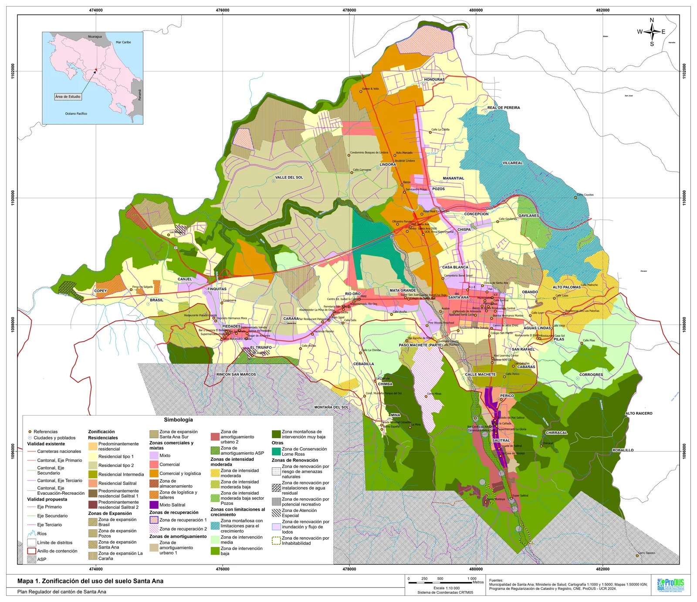
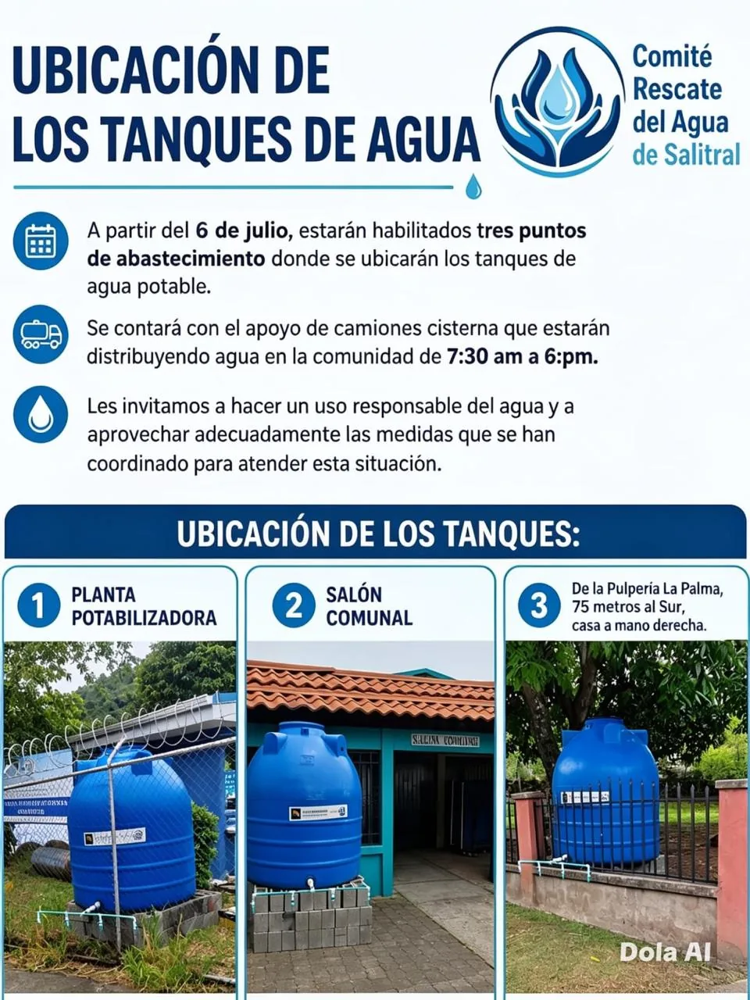

Titulares
8 notas · Septiembre 2026

El nuevo Plan Regulador: preciso en los metros cuadrados, mudo en la visión
Un trabajo técnico de peso, con cinco vacíos: condominios, agua y alcantarillado, movilidad, el precio del suelo y el centro histórico.

Tres votos divididos y el Plan Regulador a la vista
Seis a uno en la moción de lactancia y en el reglamento de becas; cinco a dos en un recurso. Y el Plan Regulador, en la etapa final.

En Salitral el agua no alcanza
La naciente que abastece al distrito pasó de producir 56 litros por segundo a 24, según el AyA, y el comité difunde dónde y cómo se reparte el agua.

¿Sabía que puede denunciar ante su municipalidad desde su teléfono?
El Observatorio Comunal Solidario reúne mapas, datos del cantón y un canal de denuncias con respuesta garantizada en cinco días hábiles.
Cuando la prevención se pone en pausa
Meses sin una persona responsable del Departamento de Promoción de Género, y sin respuestas claras sobre qué pasó con sus programas.
El crimen organizado no llega solo
De Crucitas a Abangares: cómo el oro ilegal usa canales legales, y por qué la salida pasa por más Estado, comunidad e información veraz.
Agenda de setiembre y octubre
21 actividades: talleres de empoderamiento femenino y de masculinidades, la Feria de Empleo, la Faroleada por la Democracia y más.

15 de setiembre: una fecha para hablar de libertad
La independencia y la democracia comparten fecha. ¿Qué estamos haciendo hoy para cuidar nuestra democracia?
¿Qué te pareció esta edición?
Contanos qué te sirvió, qué falta y qué deberíamos investigar el próximo mes. Nos toma un minuto leerlo y nos cambia la edición que viene.
Dejanos tu opinión